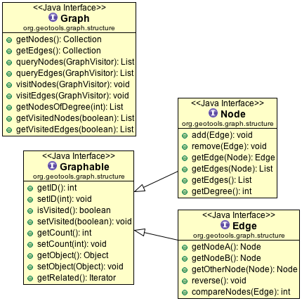
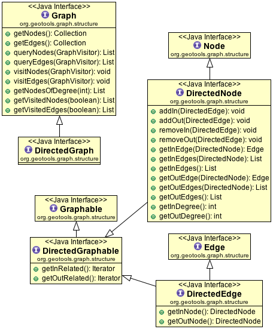
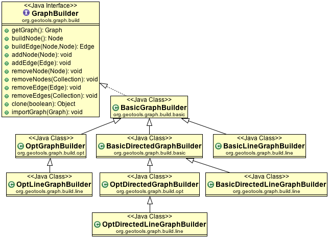
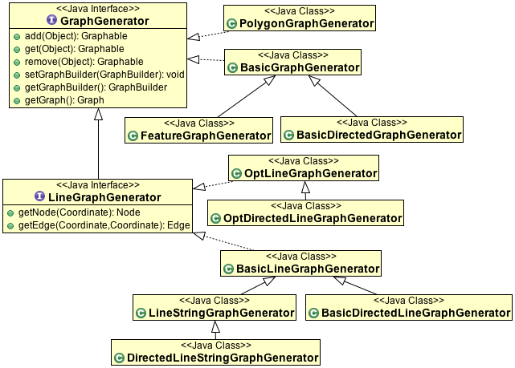

Graph¶
The gt-graph package defines the concept of a graph (or network) made up of geotools Features.
Maven:
<dependency>
<groupId>org.geotools</groupId>
<artifactId>gt-graph</artifactId>
<version>${geotools.version}</version>
</dependency>
Graph Model¶
The graph module provides a convenient, flexible and efficient API for graph construction and query. In additional to generic Graph support, it implements directed and undirected networks.
This code was originally developed at Refractions Research and has been used in Jump before being ported to GeoTools.
Use of GeoTools
The Graph module makes use of concepts and (classes) from the GeoTools core:
- Feature - atomic unit of geographic information
- FeatureType - keeps track of what attributes each Feature can hold
- FeatureID - a unique id associated with each Feature (must start with a non-numeric character)
In addition to the Feature API from core, the graph module makes use of relationships. Usually relationships are based on spatial comparisons between features, although you may be able to quickly establish a relationship using your feature attributes.
Graph constructed from LineStrings based on “shared end points”
Example a road network used for navigation.
Graph constructed from Polygons based on “touches”
Example graph of watersheds used for ground water analysis.
Graph¶
The basic layout of a Graph is a collection of edges joined together at nodes.
Graph
The core graph data structure is a collection of nodes and edges, a range of methods are available allowing access using visitors.
Node
Represents a node in the graph.
Edge
Represents the graph edge between two nodes; with a range of methods to both access and compare.
Graphable
We store the following common information for both nodes and edges:
visited: Used during traversal to mark visited components
count: In a similar fashion count is stored
object: Used to store the Feature used during creation.
Depending on the graph constructed you may end up storing the features along the edges (say for a road network) or at each node (say for a watershed network).
Graph Access¶
A Graph supports simple direct access is supported using:
- Graph.getNodes()
- Graph.getEdges()
You can also pass in a visitor in order to traverse the graph contents:
- Graph.visitNodes( visitor )
- Graph.visitEdges( visitor )
The visitor can also control when to stop the process using:
Graph.queryNodes( visitor )
Graph.queryEdges( visitor )
To provide control your visitor can indicate when it wants to stop, backtrack or continue using:
- GraphTraversal.CONTINUE
- GraphTraversal.KILL_BRANCH
- GraphTraversal.STOP
- GraphTraversal.SUSPEND
Graph Traversal¶
An alternative to direct access is the configure a GraphTraversal using:
GraphIterator: iterator specifying the order in which to visit components of the graph during the traversal.
GraphWalker: walker being iterated over the graph (usually to accomplish a specific goal)
GeoTools provides out of the box implementations for many common problems: finding the the shortest path, partition a graph into sections, or visiting all the elements.
Directed Graph¶
We also have a straight extension of these ideas to represent a directed graph in which each edge has a direction in which it can be traversed. This is the difference between considering each edge a simple connection vs thinking of each edge as an arrow.
Building¶
GraphBuilder¶
At a low level graph creation is handled using a GraphBuilder. We have a range of implementations available. The important point is that you control them by calling buildNode, and buildEdge repeatedly allowing it to build up an internal representation of your Graph.
When you are satisfied with the result you can call getGraph() to retrieve the result.
Example¶
- Building a Line network:
final LineGraphGenerator generator = new BasicLineGraphGenerator(); SimpleFeatureCollection fc = featureSource.getFeatures(); fc.accepts(new FeatureVisitor() { public void visit(Feature feature) { generator.add(feature); } }, null); Graph graph = generator.getGraph();
To make use of your graph we will use a GraphVisitor:
The following OrphanVistor is called for “each” GraphComponent where it has a chance to check if the GraphComponent is an orphan (ie has no relationships) or not.
class OrphanVisitor implements GraphVisitor { private int count = 0; public int getCount() { return count; } public int visit(Graphable component) { Iterator related = component.getRelated(); if( related.hasNext() == false ){ // no related components makes this an orphan count++; } return GraphTraversal.CONTINUE; } } OrphanVisitor graphVisitor = new OrphanVisitor(); SimpleGraphWalker sgv = new SimpleGraphWalker(graphVisitor); GraphIterator iterator = new BreadthFirstIterator(); BasicGraphTraversal bgt = new BasicGraphTraversal(graph, sgv, iterator); bgt.traverse(); System.out.println("Found orphans: " + graphVisitor.getCount());
For those familiar with the Builder Pattern (GOF Design Patterns) this will look familiar.
GraphGenerator¶
The other approach is we have a number of generators which will automatically create a Graph for you based on information you feed in. The GraphGenerators use a GraphBuilder to build up each node and edge internally; so you will need to be careful to construct them with the correct builder for the problem you are wishing to solve.
Each one of these implementations is set up to handle different kinds of data (Features, LineStrings, etc...) so please be sure to read the javadocs.
Building Graph from a FeatureCollection¶
We have a number of generators that can be used to process a feature collection in different ways in order to build up an appropriate Graph.
This example can be used if you want to build a graph from a feature collection made up of linear features:
// get a feature collection somehow SimpleFeatureCollection fCollection = featureSource.getFeatures(); //create a linear graph generate LineStringGraphGenerator lineStringGen = new LineStringGraphGenerator(); //wrap it in a feature graph generator FeatureGraphGenerator featureGen = new FeatureGraphGenerator( lineStringGen ); //throw all the features into the graph generator FeatureIterator iter = fCollection.features(); try { while(iter.hasNext()){ Feature feature = iter.next(); featureGen.add( feature ); } } finally { iter.close(); } Graph graph = featureGen.getGraph()
Building Graph from Line Segments¶
This example can be used to build a graph from just a set of line segments:
//we have some line segments LineSegment[] lines = ... //create the graph generator BasicLineGraphGenerator graphGen = new BasicLineGraphGenerator(); //add the lines to the graph for ( int i = 0; i < lines.length; i++ ) { graphGen.add( lines[i] ); } Graph graph = graphGen.getGraph()
Building a FeatureCollection from your Graph¶
Once the graph is built each, edge#getObject() will hold the original feature used to built it.
You can traverse your graph and build up FeatureCollection as you go.:
SimpleFeatureCollection features = FeatureCollections.newInstance();
for ( Iterator e = graph.getEdges().iterator(); e.hasNext(); ) {
Edge edge = (Edge) e.next();
SimpleFeature feature = (SimpleFeature) e.getObject();
features.add( feature );
}
Shortest Path¶
We have a number of ways to calculate the shortest path between two nodes:
The class DijkstraShortestPathFinder can be used to calculate a path using Dijkstra’s Shortest Path algorithm.:
//reference to a graph, already built Graph graph = ...see above... //find a source node (usually your user chooses one) Node start = .. // create a strategy for weighting edges in the graph // in this case we are using geometry length DijkstraIterator.EdgeWeigter weighter = new DijkstraIterator.EdgeWeighter() { public double getWeight(Edge e) { SimpleFeature feature = (SimpleFeature) e.getObject(); Geometry geometry = (Geometry) feature.getDefaultGeometry(); return gometry.getLength(); } } // Create GraphWalker - in this case DijkstraShortestPathFinder DijkstraShortestPathFinder pf = new DijkstraShortestPathFinder( graph, start, weighter ); pf.calculate(); //find some destinations to calculate paths to List/*<Node>*/ destinations = ... //calculate the paths for ( Iterator d = destinations.iterator(); d.hasNext(); ) { Node destination = (Node) d.next(); Path path = pf.getPath( destination ); //do something with the path }AStarShortestPathFinder can be used in a similar fashion (and is often quicker)